The review covered all 221 animations across Year 7 and HSC. Every topic was captured at each stage, with additional motion samples, followed by a visual pass across the collection. Seventeen animations were revised and their ready-made MP4s refreshed.
The main checks were whether the diagram matches its explanation, whether the motion helps communicate the concept, whether comparisons are easy to read, and whether colours and arrows are used consistently. Classification and evidence topics retain diagram-style explanations.
Three states now appear together, with the same number and size of particles. Solids vibrate in place; liquid particles remain close while rearranging; gas particles collide and bounce from the walls.
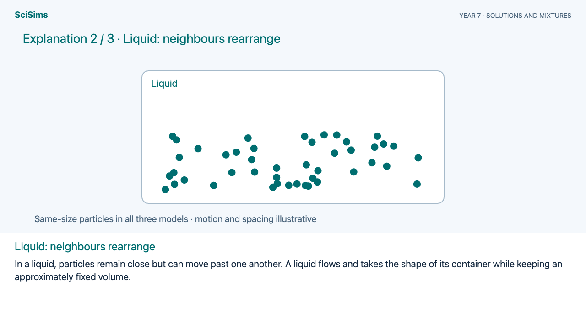
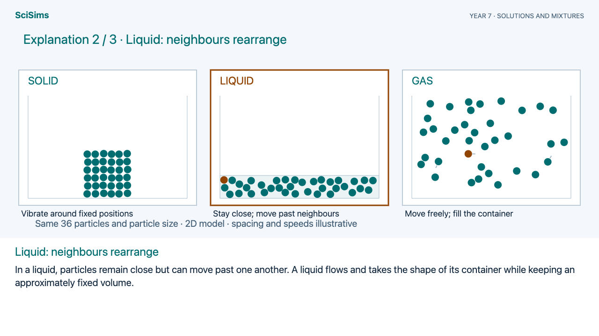
Low and high power now show the changing field of view. A separate comparison distinguishes enlarging a blur from resolving two features.
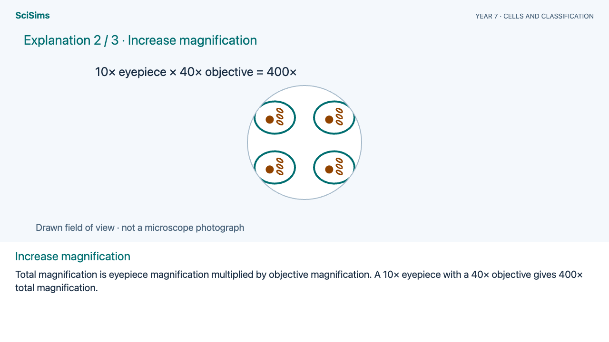
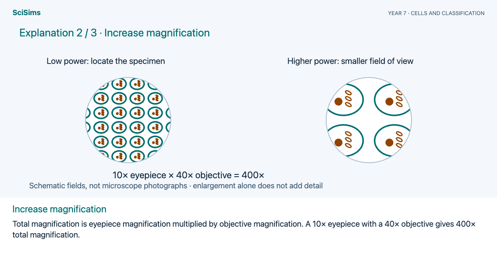
A funnel, retained residue and collected filtrate replace the bare line. Dissolved solute follows the solvent through the filter.
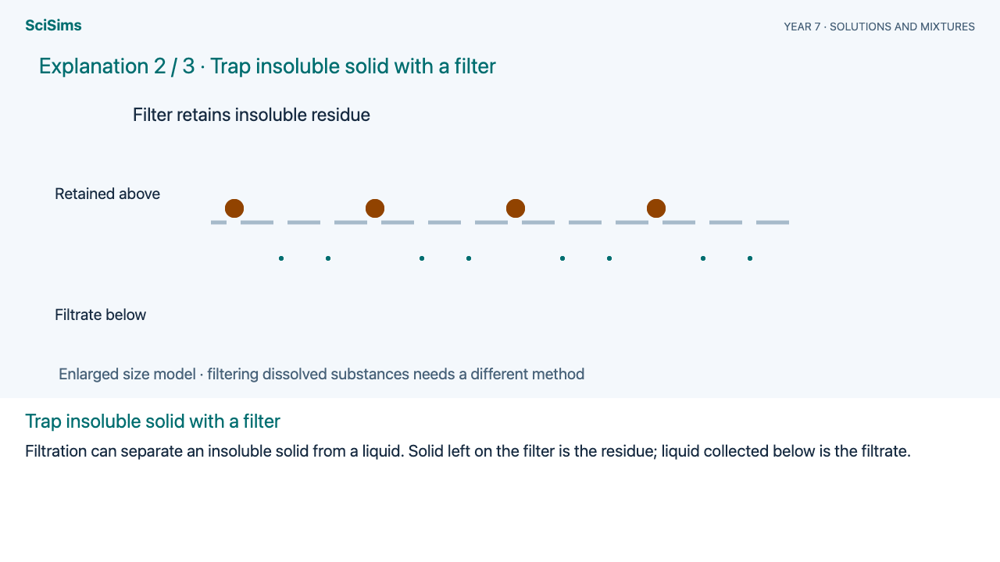
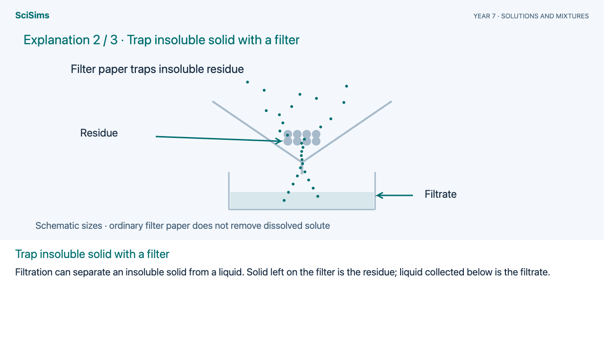
Reactants and products now share one container. A moving piston compresses the mixture and the displayed composition changes while conserving atoms.
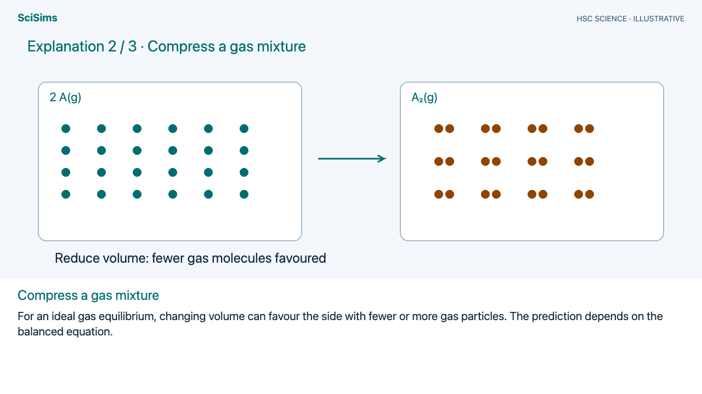
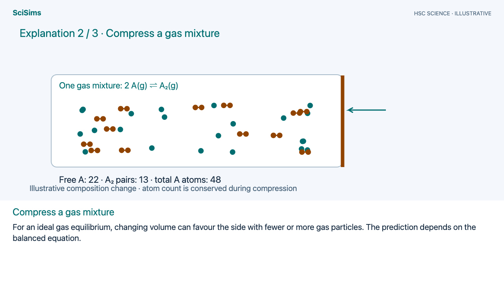
The lens now sits within the eye, rays continue past the myopic focus, and a diverging spectacle lens visibly corrects the incoming rays.
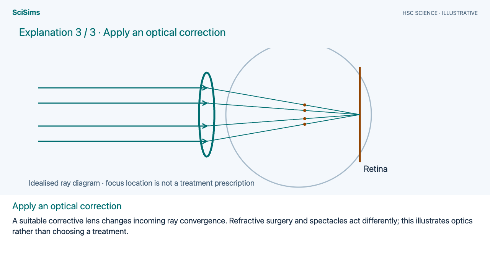
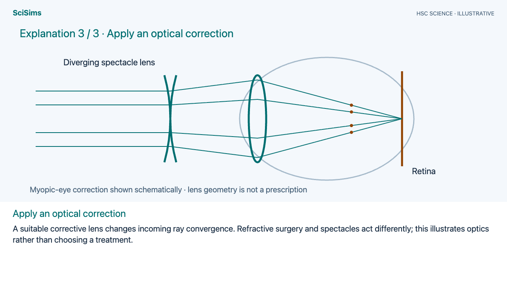
The integral now accumulates area under the drawn peaks. It stays level between signal groups, instead of climbing through empty parts of the spectrum.
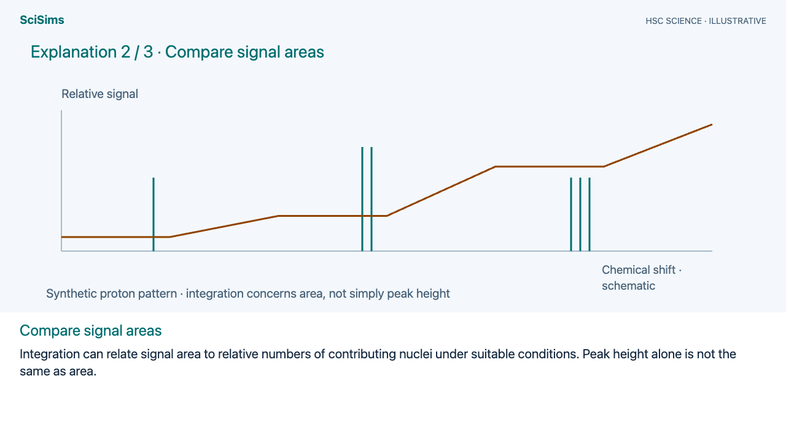
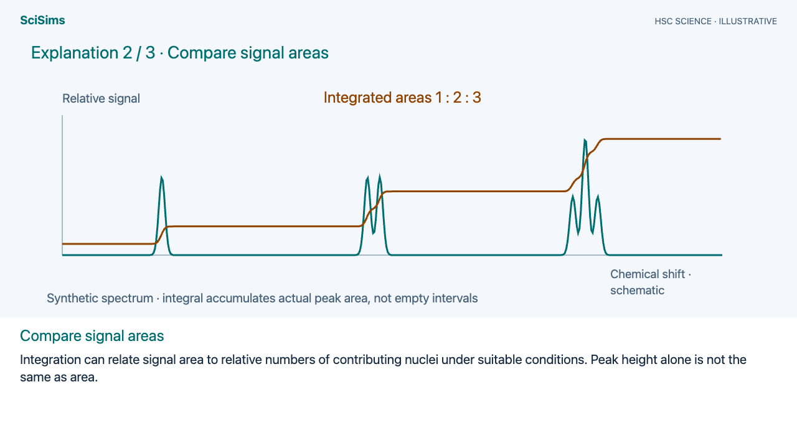
Gamete segregation and Punnett-square labels are larger. The banked-turn example includes a labelled friction force and a clearer top view. Electromagnetic waves have explicit projected axes and field labels. Subduction has moving plate markers. The orbital-climate explanation now distinguishes eccentricity, tilt and precession. Tides have a rotating coastal marker, winnowing fragments follow varied paths, and the solution diagrams use independent solvent-particle motion.
All revised scenes were checked in light and dark modes. The rebuilt particle animation was also checked for constant particle count, wall containment and collision behaviour. The refreshed videos retain embedded explanations, 720p resolution and 30 fps.